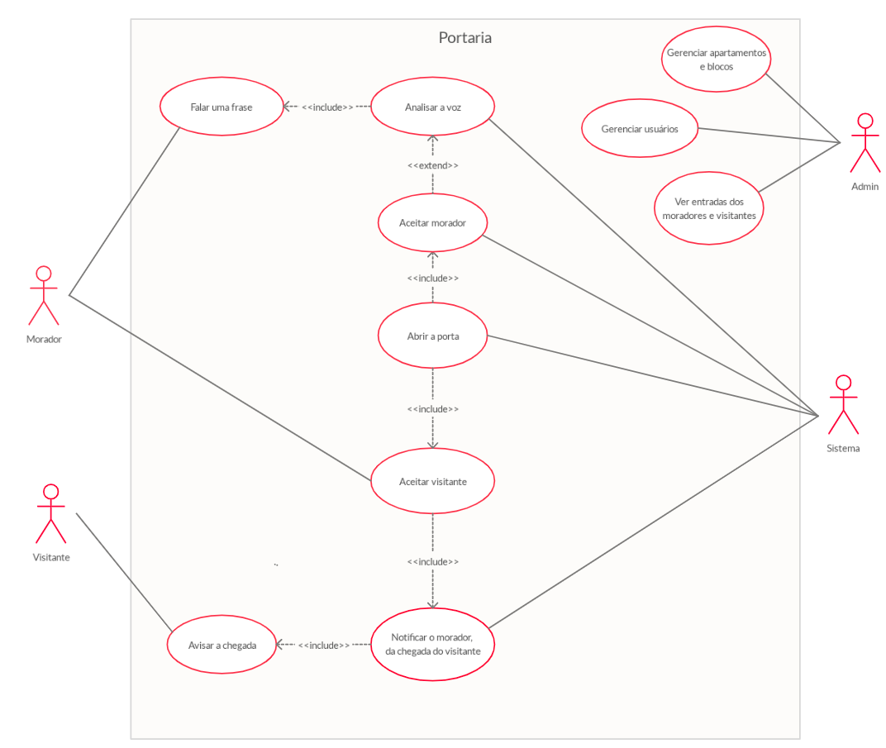
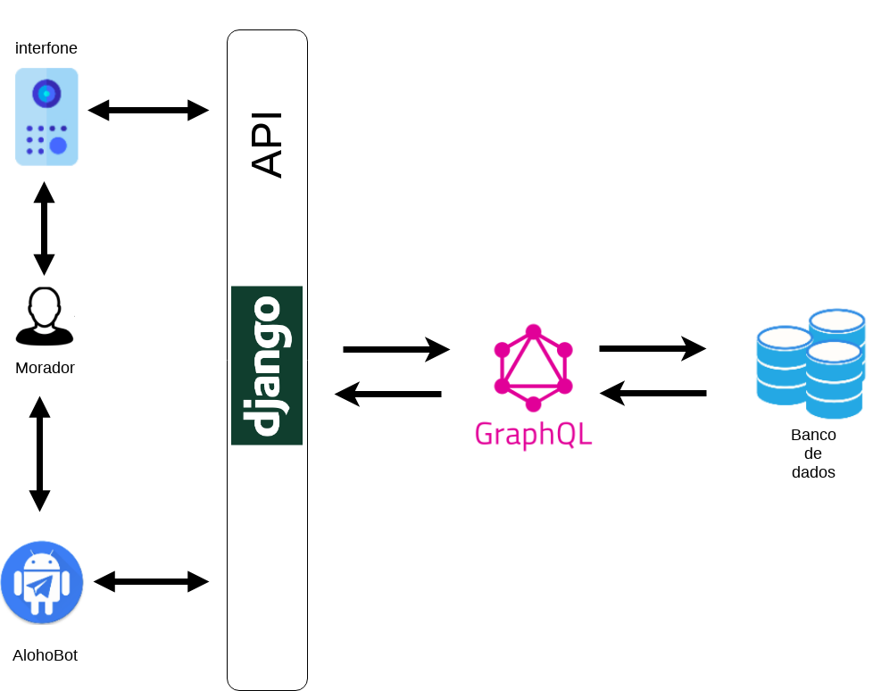
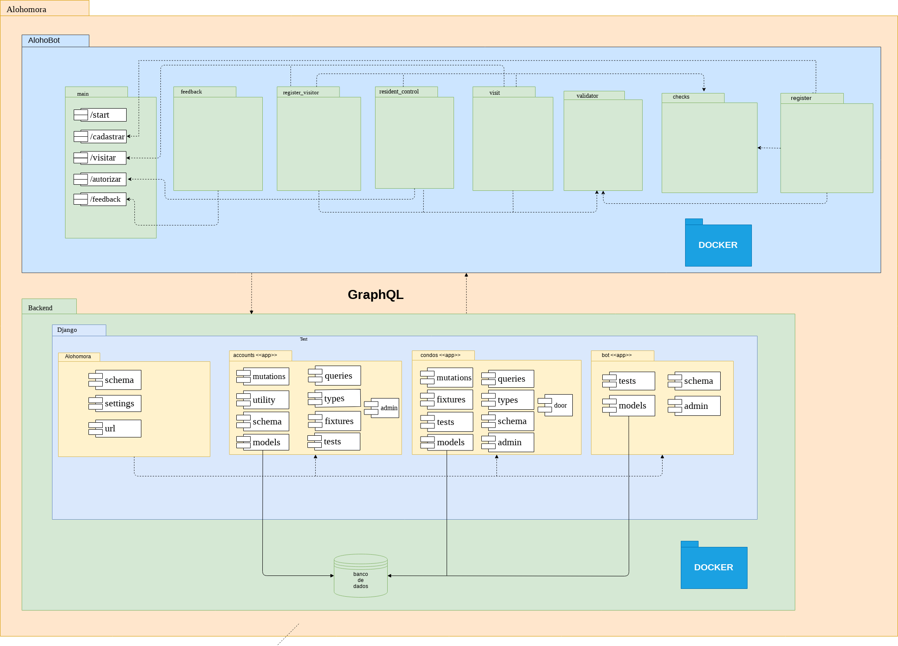
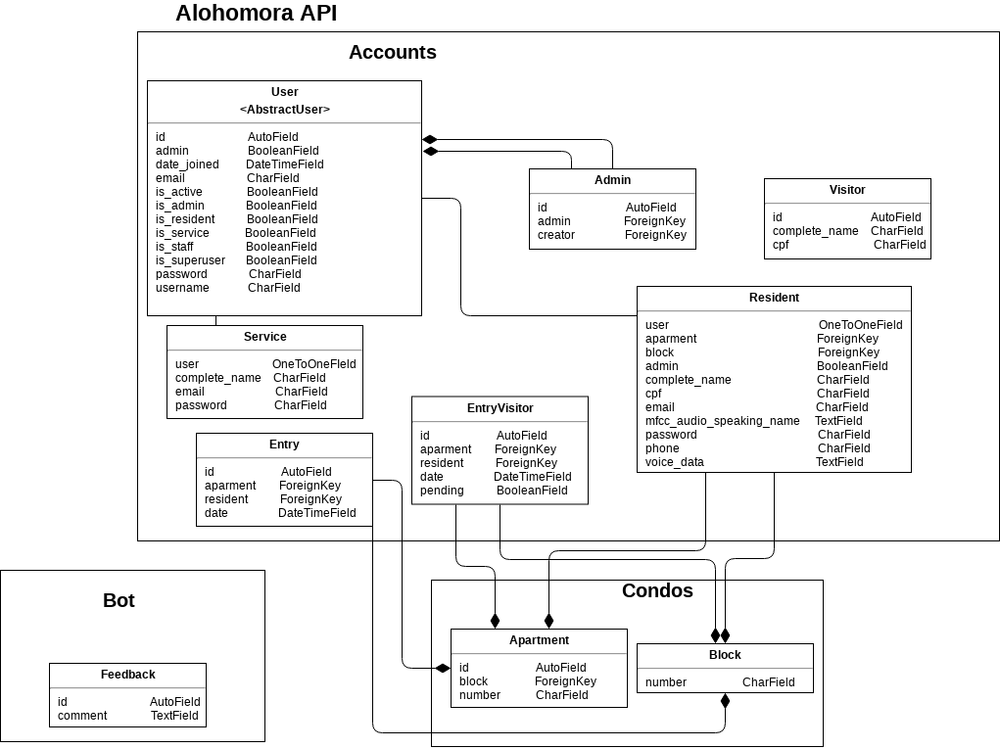
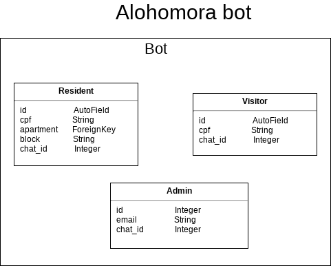

Alohomora - Portaria Virtual
Arquitetura
Versão 1.0
Histórico de Revisão
| Data | Versão | Descrição | Autor |
|---|---|---|---|
| 26/09/2019 | 1.0 | Criação da primeira versão do documento | Paulo Batista, Rodrigo Lima, Victor Gonçalves |
| 01/10/2019 | 1.1 | Revisão de erros ortográficos e sintaxe | João Luis Baraky, Victor Jorge Gonçalves |
| 06/10/2019 | 1.2 | Incremento de uma explicação básica do que é significa MVT | Rodrigo Lima, João Luis Baraky |
| 07/10/2019 | 1.2 | Adição dos objetivos, diagramas de pacotes e relações e melhoria no topico 5 | João Luis Baraky, Rodrigo Lima |
| 30/10/2019 | 1.3 | Revisão do documento | Mateus Nóbrega |
| 09/11/2019 | 1.3 | Adição de alguns diagrama e atualização de outros | Matheus Nóbrega, Paulo Batista |
Sumário
1. Introdução \ 1.1 Objetivo \ 1.2 Escopo \ 1.3 Definições, Acrônimos e Abreviações \ 1.4 Referências
2. Representação da Arquitetura \ 2.1 Django \ 2.1.1 MVT\ 2.2 GraphQL \ 2.2.1 Graphene-Python \ 2.2.2 Graphene-Django
3. Objetivos e Restrições da Arquitetura \ 3.1 Objetivos \ 3.2 Restrições
5. Visão Lógica \ 5.1 Visão Geral \ 5.2 Diagrama de Relações \ 5.2.1 Responsabilidades por etapa \ 5.3 Diagrama de pacotes 6. Visão de implementação \ 6.1 Diagrama das models
1. Introdução
1.1 Objetivo
Este documento pretende mostrar a arquitetura utilizada da portaria virtual Alohomora, mostrar aos envolvidos cada parte da aplicação e transmitir aos interessados as decisões arquiteturais que foram tomadas.
1.2 Escopo
Este documento fornece uma visão da arquitetura do Alohomora, um sistema de portaria virtual. Alohomora é um projeto realizado para as disciplinas Métodos de Desenvolvimento de Software (MDS) e Engenharia de Produto de Software (EPS), do curso de Engenharia de Software da Faculdade UnB Gama (FGA) da Universidade de Brasília (UnB).
1.3 Definições, Acrônimos e Abreviações
| Acrônimo/Abreviação | Definição |
|---|---|
| API | Application Programming Interface |
| MDS | Métodos de Desenvolvimento de Software |
| EPS | Engenharia de Produto de Software |
| MVT | Model, View, Template |
1.4 Referências
Sistema de Registro em Curso - Documento de Arquitetura de Software; Disponível em: http://mds.cultura.gov.br/extend.formal_resources/guidances/examples/resources/sadoc_v1.htm. Acesso em: 26 de setembro de 2019.
PATROCÍNIO, Sofia; GOUVEIA, Micaella; PEREIRA, Samuel; TAIRA, Luis; MUNIZ, Amanda. Chatbot Gaia: Arquitetura. Disponível em: https://github.com/fga-eps-mds/2019.1-Gaia/blob/master/docs/projeto/DocArquitetura.md. Acesso em: 26 de setembro de 2019.
Padrões Arquiteturais MVC X Arquitetura do Django; Disponível em: https://github.com/fga-eps-mds/A-Disciplina/wiki/Padr%C3%B5es-Arquiteturais---MVC-X-Arquitetura-do-Django. Acesso em: 05 de outubro de 2019.
HIROSHI, Lucas; MARQUES, Guilherme; RODRIGUES, Natália; BORGES, Felipe; NÓBREGA, Mateus. ReceitaMais - Documento de Arquitetura. Disponível em: https://github.com/fga-eps-mds/2017.2-Receita-Mais/wiki/Documento-de-Arquitetura. Acesso em: 30 de outubro de 2019.
GraphQL vs REST: Overview; Disponível em: https://phil.tech/api/2017/01/24/graphql-vs-rest-overview/. Acesso em: 30 de outubro de 2019.
Why use GraphQL, good and bad reasons. Disponível em: https://honest.engineering/posts/why-use-graphql-good-and-bad-reasons. Acesso em 30 de outubro de 2019.
2. Representação da Arquitetura
2.1 Django
Django é uma framework web escrita em Python que encoraja o desenvolvimento rápido e organizado. A framework enfatiza a reusabilidade e conectividade de componentes, assim, diminuindo a quantidade de código e facilitando a criação de sistemas mais complexos. No Django, é utilizada a arquitetura Model-View-Template (MVT), que é uma variação da arquitetura Model-View-Controller (MVC).
2.1.1 MVT
- Model - É a parte que define o banco de dados, suas classes e como elas se comportam, métodos para manipulação do banco de dados e as validações aplicáveis (regras de negócio).
- View - É a ponte de comunicação entre a Model e a Template. É nela que há o tratamento de informações recebidas e o retorno para o usuário.
- Template - É a parte da interface do usuário. Contém as informações enviadas pela View e define como serão apresentadas essas informações, além de comunicar para ela as informações enviadas pelo usuário.
2.2 GraphQL
GraphQL é uma linguagem de busca e de manipulação de dados para APIs que permite o usuário estruturar os dados que ele necessita. A linguagem oferece uma flexibilidade e uma maior facilidade em lidar com APIs mais complexas do que outras soluções. A gama de funcionalidades contribui na eficiência e velocidade no desenvolvimento de aplicações.
2.2.1 Graphene
Graphene Python é uma biblioteca que oferece as ferramentas necessárias para implementar uma API GraphQL em Python. Ela permite que os dados que o seu serviço providenciará sejam definidos usando código Python.
2.3 Telegram
Telegram é uma aplicação multiplataforma de troca de mensagens instantâneas baseada na nuvem. Focada em segurança e performance, permite que o usuário envie texto, imagens, fotos, mensagens de áudios e arquivos de qualquer tipo. Ele também providencia uma API para que desenvolvedores possam implementar bots que interajam com usuários.
3. Objetivos e Restrições da Arquitetura
3.1 Objetivos
- O sistema deve garantir a privacidade dos dados inseridos no banco de dados
- Deve ser possível estruturar o condomínio (blocos e apartamentos) e cadastrar moradores manualmente;
- Fornecer a funcionalidade de autenticação de usuário, morador e visitante, via voz;
- É necessário ter uma comunicação com o morador com o intuito de notificar a chegada de um visitante;
- O morador deverá ter o poder se permitir ou não a entrada de um visitante que o referencia.
3.2 Restrições
- O hardware deve estar conectado a internet.
- O sistema deve estar integrado ao banco de dados para a autenticação dos usuários.
- O sistema deve estar integrado a um bot no Telegram para interação com os usuários.
- Os usuários moradores devem ter o aplicativo Telegram instalado e internet para a comunicação com o sistema via bot.
- O hardware deve ter um microfone para a gravação de voz, pois precisa-se da voz para a autenticação.
4, Visão de Casos de Uso
Os casos de uso relevantes para a arquitetura são:
- Falar uma frase
- Analisar a voz
- Aceitar morador
- Abrir porta
- Aceitar visitante
- Notificar o morador da chegada do visitante
- Avisar a chegada
- Gerenciar apartamentos
- Gerenciar usuários
- Ver entradas dos moradores e vistantes

5. Visão Lógica
5.1 Visão Geral
A portaria virtual Alohomora está sendo construída em Django, utilizando da ferramenta de busca GraphQL, integrada com Graphene-Django. O objetivo principal ao usar o Django é ter uma organização que facilite o trabalho e a adaptação do grupo. O GraphQL fornece velocidade na busca de dados e eficiência.
5.2 Diagrama de Relações

O morador interage com o AlohoBot para requisitar ou modificar alguma informação, e interage também com o interfone para fazer a autenticação por voz. Nos quais requisitam algum tipo de ação do sistema, assim a API processa a ação requirida. O graphQL a partir das mutations e queries, é o responsável por buscar e modificar as informações através da comunicação com a model, esta que se comunica com o banco de dados, e retorna o resultado para o bot ou interfone.
5.2.1 Responsabilidades por etapa
A etapa de comunicação do usuário com o AlohoBot deve conter não apenas classes responsáveis pelos componentes gráficos e visuais, mas também deve guardar as informações do usuário no banco de dados. Dessa forma, o código do bot está desacoplado com o da API.
No AlohoBot vai ser feito uma request para o GraphQL buscar ou modificar as informações no banco de dados, pois no GraphQL é necessário que seja definido no corpo do JSON se a requisição desejada estará performando uma query ou uma mutation. A partir disso, já é possível retornar para o cliente as informações.
No AlohoBot ou interfone, a voz do usuário será convertida e passada para o algoritmo FastDTW, implementada dentro da API e ela retornará se a voz realmente pertence ao usuário ou não.
5.3 Diagrama de Pacotes

6. Visão de implementação
6.1 Diagrama das models
 
7. Qualidade
- Utilização de algorítimos otimizados para autenticação de usuário pelas voz.
- Utilização de boas práticas no desenvolvimento do projeto.
- Utilização de ferramentas que garantem velocidade e produtividade, como o GraphQL e Django.
- Facilidade para integração com outras bibliotecas e serviços.
- Fornecer um produto final o mais eficiente e otimizado possível.